A compiler that says what, where, why and how to fix it.
Bayan is a value-oriented language that compiles to a native executable. No runtime, no garbage collector, no exceptions. Every form has one meaning, so every message can be exact.

Four answers, every time
In the Qur'an the hoopoe (هدهد, hudhud) returns with news that is certain and clear (27:20–22). Bayan's diagnostics aim at the same.
- What
- The message names the rule that broke:
`end` is passed without its particle `until:`. - Where
- File, line and column, then the source line with a marker under the exact span.
- Why
- A short label on the marker. Each code has a longer account:
bayan explain BYN5005. - How
- A
help:line, and where the fix is mechanical, the corrected line with the change marked. Add--diagnostics jsonand tools get the same fix as data.
Derived from C#, with the ambiguity taken out
Structs and enums, switch expressions, $"…" interpolation. Newlines end statements. Output below is the program's own, from the compiler's test suite.
enum Color { red green blue } string describe(Color c) => c switch { .red => "warm", Color.green or .blue => "cool", } for c in Color.values { print($"{c.ordinal} {c.name} {c} {describe(c)}") }
0 red red warm 1 green green cool 2 blue blue cool
What you get
- Value-oriented
- Structs, no classes, no inheritance. Values live on the stack, in arenas, or in owned handles.
- Native
- Bayan compiles to C, then to an executable through
zig cc. Nothing ships with your program. - No exceptions
- Failure is in the signature:
T f() fails E. Handle it withtryorcatch. - Self-hosting under way
- The bootstrap compiler is C# on .NET 10 with NativeAOT. Bayan is being rewritten in Bayan.

بيان
One form, one meaning
Arabic scribes added dots (iʿjām) to letters so a reader could not mistake one for another. Bayan holds its syntax to the same rule: a call spells its particles, a name tells you its part of speech, and a mistake gets one precise message.